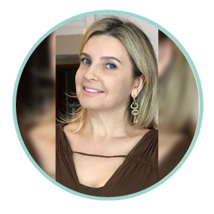

Uma nutrição sem restrição, pensada pra sua vida real.
Sou a Ana Paula Feijó. Atendo por teleconsulta em todo o Brasil, com foco em compulsão alimentar e suporte nutricional para veganos — sempre com uma abordagem acolhedora, sem dietas da moda.

Sobre mim
Nutrição que olha para o comportamento, não só para o prato.
Sou a Ana Paula Feijó, nutricionista (CRN8 11.897/P). Atendo por teleconsulta, de qualquer lugar do Brasil, com um olhar atento para a relação de cada paciente com a comida.
Já participei do podcast "ELA Saudável" falando sobre compulsão alimentar — um tema que faz parte do meu dia a dia de consultório.
Áreas de atendimento
Serviços em destaque
Um acompanhamento pensado para a sua relação com a comida — não uma dieta padrão.
Teleconsulta
Atendimento 100% online, de qualquer lugar do Brasil, com a mesma atenção de uma consulta presencial.
Saber maisCompulsão alimentar
Acompanhamento para quem já tentou várias dietas e quer entender a raiz da relação com a comida.
Saber maisSuporte para veganos
Orientação nutricional especializada para quem segue uma alimentação vegana, com plano completo e seguro.
Saber maisComo agendar
Escolha o ritmo do seu acompanhamento
Fale comigo pelo WhatsApp para confirmar disponibilidade, valores e o que está incluso em cada formato.
Uma teleconsulta para entender seu caso e traçar os primeiros passos.
Falar no WhatsAppConsultas ao longo de 3 meses, com ajustes conforme sua evolução.
Falar no WhatsAppPara uma mudança de hábitos mais completa, com suporte estendido.
Falar no WhatsAppVamos conversar
Fale comigo pelo WhatsApp.
Atendimento 100% online — agende sua teleconsulta de qualquer lugar do Brasil.